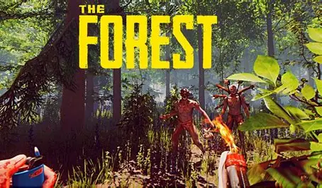

¿En que consisten los juegos de supervivencia?
Los juegos de supervivencia consisten en poner al jugador en un entorno hostil donde debe mantenerse con vida gestionando recursos limitados y enfrentando amenazas constantes. La experiencia se centra en la resistencia, la exploración y la toma de decisiones estratégicas.
caracteristicas

Recursos limitados: comida, agua, materiales y energía escasos que deben recolectarse o fabricarse.
Entorno hostil: puede ser naturaleza salvaje, zombis, monstruos, desastres o incluso otros jugadores.
Crafting (fabricación): creación de herramientas, armas, refugios y objetos útiles a partir de recursos recolectados.
Exploración: descubrir nuevas zonas, recolectar materiales y enfrentar peligros inesperados.
Progresión: mejorar habilidades, equipo o refugio para aumentar las probabilidades de sobrevivir.